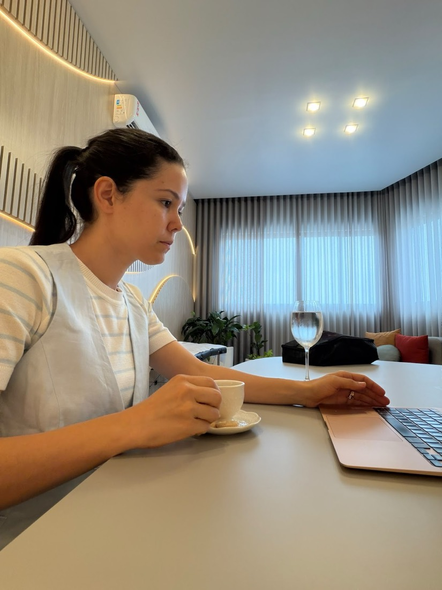

Dra. Tarcila Antunes Banagouro
- Clínica Teor, Av. Magda de C. Pissinatti, 2099, Santa Cecília, Sinop, MT
- Segunda a sexta, 07h às 18h
- (66) 99913 4321
- @dra.tarcila.banagouro
Clínica Teor · Santa Cecília, Sinop
Uma pediatra que acompanha seu bebê de perto, examina com calma, ouve o que você percebe em casa e explica cada orientação com clareza. Da primeira semana de vida à adolescência, com hora marcada na Clínica Teor.
Atendimentos
Cada fase com o mesmo cuidado: entender a rotina da família, examinar com calma e deixar claro o próximo passo.
Consulta de rotina ou quando algo preocupa: febre, tosse, alimentação, sono e comportamento.
Ver detalhesAcompanhamento do crescimento, do desenvolvimento e das vacinas, mesmo quando está tudo bem.
Ver detalhesPrimeira consulta depois da maternidade: amamentação, icterícia, umbigo, sono e cuidados em casa.
Ver detalhesQuando começar, como oferecer e como montar o prato do bebê, dentro da rotina da família.
Ver detalhes
Sobre
Sou pediatra em Sinop e acredito que cada consulta precisa de tempo. Tempo para ouvir o que a família percebe em casa, examinar a criança por inteiro e explicar o porquê de cada orientação, sem pressa e sem termos difíceis.
Meu trabalho vai além do peso e da medida: acompanho crescimento, desenvolvimento, alimentação, sono e comportamento, para que os pais saiam da consulta seguros sobre o próximo passo.
Na consulta
A indicação de qualquer conduta depende de consulta médica e avaliação individual.
O espaço
Recepção ampla, sala de espera confortável e estacionamento em frente, no bairro Santa Cecília.
Consultório
Atendimento com hora marcada na Clínica Teor. Estacionamento em frente à clínica e acesso para cadeira de rodas.
Segunda a sexta, 07h às 18hEm caso de urgência, como dificuldade para respirar, convulsão ou criança muito abatida, procure o pronto atendimento mais próximo.
Perguntas
O ideal é nos primeiros dias depois da alta da maternidade, de preferência ainda na primeira semana de vida. Leve a Caderneta da Criança, o resumo de alta e os resultados dos testes do pezinho, da orelhinha, do olhinho e do coraçãozinho.
Do recém nascido à adolescência. O intervalo entre as consultas muda com a idade, e a Dra. Tarcila combina com a família quando será o próximo retorno.
No primeiro ano de vida as consultas são mais frequentes, porque o bebê muda muito de um mês para o outro. A partir do segundo ano os retornos ficam mais espaçados.
Pelo WhatsApp (66) 99913 4321. O atendimento é com hora marcada, para que cada consulta tenha o tempo de que precisa.
Na Clínica Teor, Av. Magda de C. Pissinatti, 2099, bairro Santa Cecília, em Sinop. Há estacionamento em frente à clínica.
Atendimento com hora marcada na Clínica Teor, bairro Santa Cecília, Sinop.
Agendar pelo WhatsApp